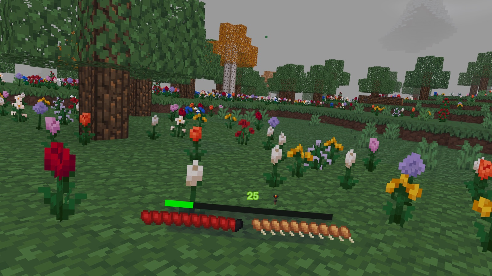
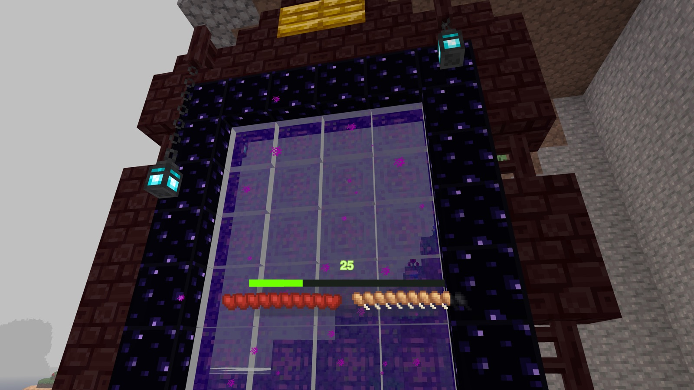
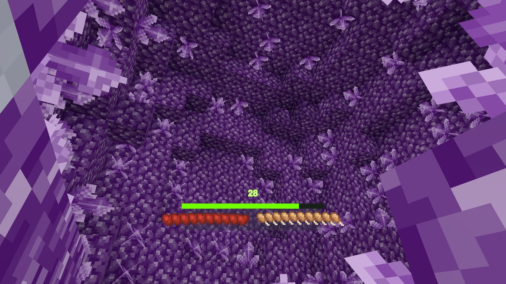
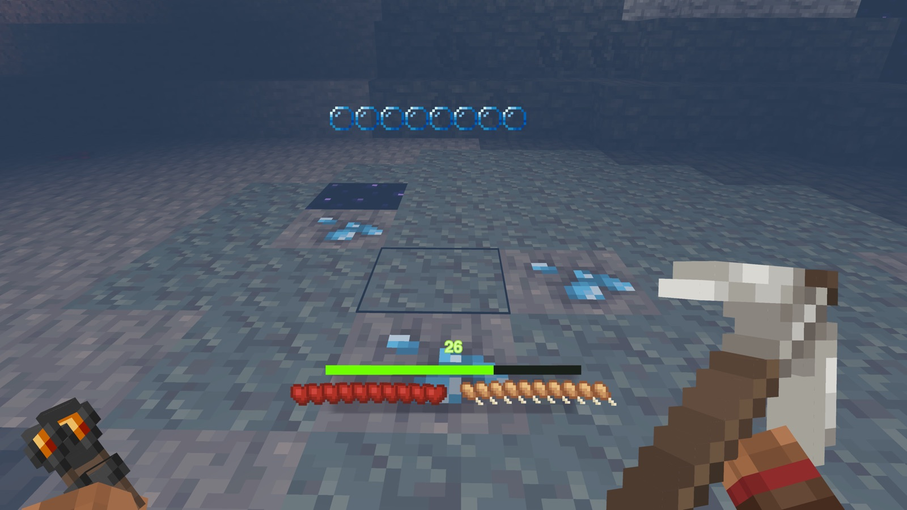
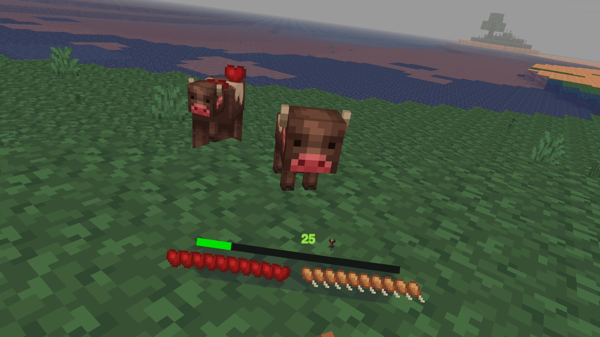
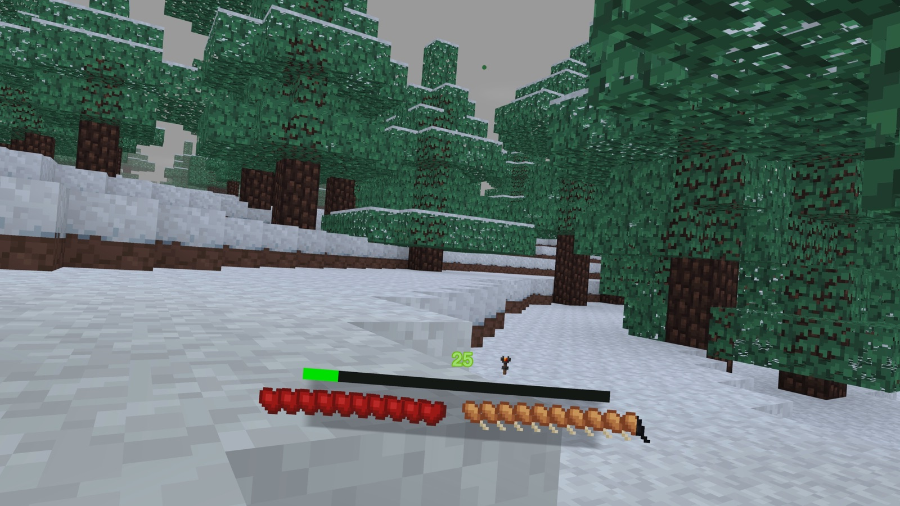
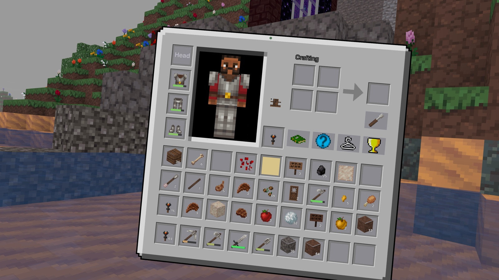

Apple Vision Pro · Swift + Metal · Luanti protocol
I wanted to actually play Luanti on the Vision Pro, not stream a desktop into a floating window. So I wrote a client that renders the world itself, per-eye, in the headset.
Most of the client code was written with an AI coding assistant, so it may have mistakes or stale comments. Read the code and check anything before you rely on it. Bug reports and fixes are welcome. More detail, including what's missing, is in the README.

A walk through a snowy village to the bell, recorded in the headset on a VoxeLibre server. Hearts, hunger and the experience bar sit low in view.
Recorded with the game's own clip recorder (hold the Create button). The clip is a flat view; in the headset each eye gets its own.
A new Luanti network client written in Swift and Metal. It isn't a port of the engine; it talks the same wire protocol.
It speaks the Luanti UDP protocol directly: SRP login, zstd map-block streaming, node and item definitions, media download, entities, formspecs, HUD. An unmodified server sees it as just another client and hands over the whole game. The world is rendered per-eye with Compositor Services, meshed live as blocks stream in, and you walk around, dig, place, and open inventories with the PSVR2 Sense controllers (or a Bluetooth keyboard, with gaze to aim and a pinch to click).
It connects to any Luanti server. I build and test it against VoxeLibre (a Minecraft-like game for Luanti), so that's where the polish is, but the protocol layer doesn't care which game you run.
It's a hobby project and still in progress. Things I know about:






All captured in the headset with the app's photo mode.
The easiest way in is the TestFlight public beta: open the link on your Vision Pro and install through the TestFlight app. You'll need PlayStation VR2 Sense controllers or a Bluetooth keyboard, and a Luanti server to join; the app doesn't host worlds itself. Feedback goes through TestFlight's own feedback button. Every button and key is on the controls page.
You'll need Xcode and a Luanti server to point it at (a local dev server is fine). Set your own Apple Developer team for a device build.
git clone https://github.com/bettse/voxelnative cd voxelnative/native xcodegen # generate the Xcode project open VoxelNative.xcodeproj # run on Apple Vision Pro or the simulator
Set DEVELOPMENT_TEAM in native/project.yml before running on a device, and enter your server in the launcher.